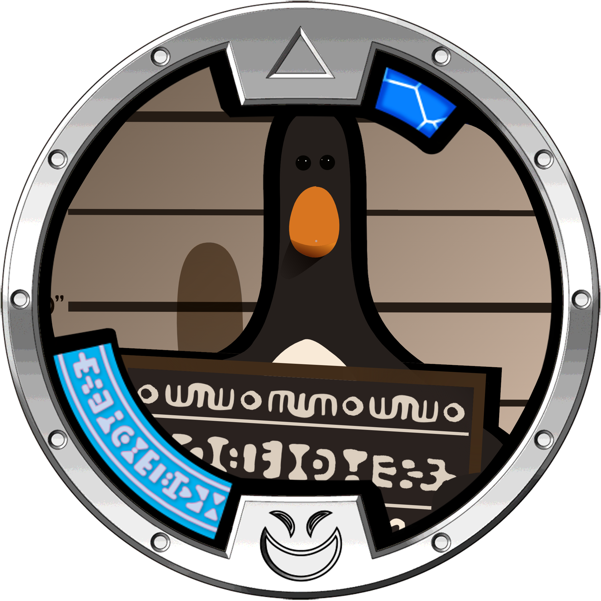
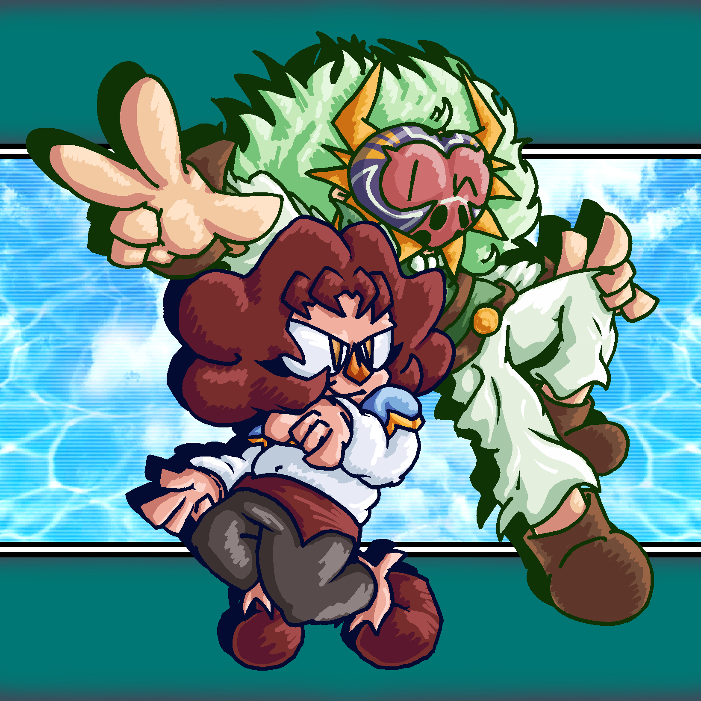
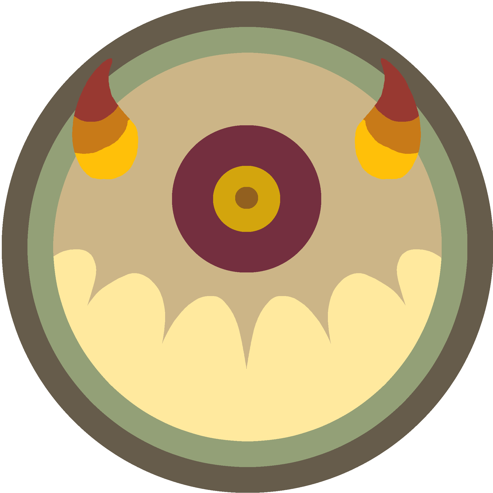
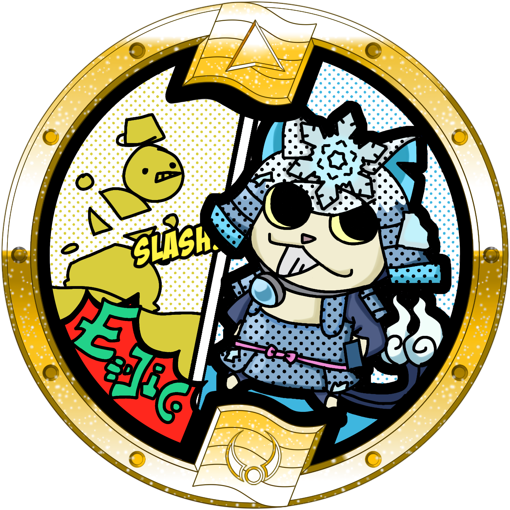
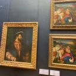
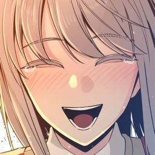
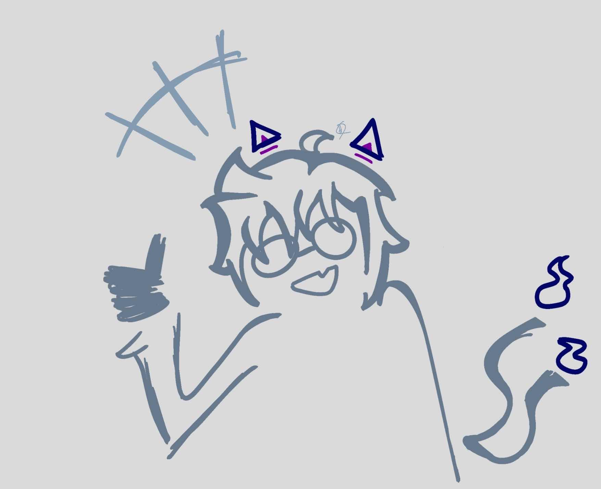
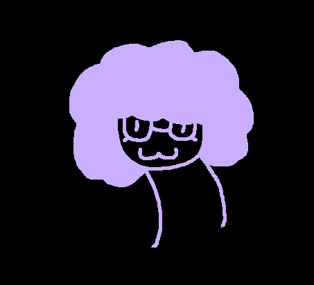
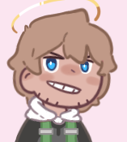
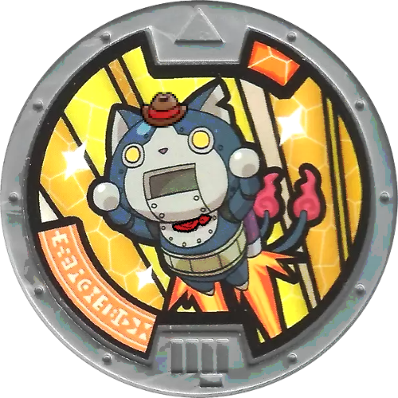

Blasters ++ Team

Younes
Creator of the mod. Responsible for implementing all changes and reworking several of
the
Yo-kai, as well as directing the project as a whole. Also a general madlad!
Creator and director of the mod. Implements all changes.
![J4's profile picture. It's a very beatiful photograph of a chestnut-fronted macaw, a species of parrot, cropped to only show the bird's face. The bird has green plumage and a black beak, and the skin around its eyes is white. The photo is stunningly beautiful, showing the bird coated in amber golden light from the early hours of the morning in the Amazon jungle. I'm totally not writing all of this to boost my own ego, but you should totally go check out my other very cool website over at https://jbirding.com - J4.](./pfps/J4PFP.png)
J4
Resident Blasters nerd who knows way too much about what's good in this game. Designer
of
several items and Yo-kai kits. I also made this site!
Balancer and Yo-kai and equipment designer. I also made this site!

A. Fren
Longtime Blasters fanatic. Designs Yo-kai and equipment, writes, and generally just
helps
with creative concepts.
Moveset and equipment designer, helps with creative concepts.

Stitches
Talented artist who has drawn promotional art pieces and several Yo-kai medals used in
the
mod.

Komabassador
All around Yo-kai Watch fan and collector who runs the Blasters ++ Twitter & Bluesky
accounts, and helps with creative concepts for the mod every now and then!
Runs the Blasters ++ Twitter & Bluesky accounts and helps with creative concepts.

Memelord
"i make a the models and a the animations and i make a the j4 say 'dude chill out'"
—memelord
—memelord
Modeler and animator for new and reworked Yo-kai.

Whisperito
Professional Yo-kai Butler since 1997. Admin of the Blasters ++ Discord server who set
up
most of it. States "[they] like to eat rocks sometimes".
Admin of the Blasters ++ Discord server who set up most of it.

Light
YKW4 modder and creator of the English YKW4 fan translation. Translates descriptions
from
Japanese into English.
Creator of the English YKW4 fan translation. Translates descriptions from Japanese.


Orochi
Just a big and ignoble individual who does nothing but draw. He made a lot of medals for
the
mod.
Talented artist who has drawn a lot of the medals you see in the mod.

UnderScore
Creative Director who also made some assets for the mod.
"I'm happy to be working on B ++. Working with the team what makes it fun for me."
"I'm happy to be working on B ++. Working with the team what makes it fun for me."
Comes up with creative concepts and writes text for the mod.

Math
Artist and popular YKW Modder that is helping with model ports and is making his own
Yo-kai
Watch 3 Mod.
YKW Modder who helps with model ports.

Leo the 2nd
YKW Modder who helps with the more technical aspects of the mod. He's the creator of Yo-kai Watch Blasters Master Mode.
YKW Modder who helps with the more technical aspects of the mod.


Frost Shogunyan
Hey I'm the guy on YouTube, Frost Shogunyan. I do videos on all sorts of Yo-kai Watch stuffs, and now I voice Frost Shogunyan in Blasters ++! It's an honor to be in the mod and be able to help out!
Talented artist who voices Frost Shogunyan and has drawn art and Yo-kai medals for mod.

Argo
Handles mod's changelog and helps gather information.

n123
Knowledgeable tech geek who helps with technical aspects of the game and more.
Blasters ++ Voice Cast

Aeysor
“Hello! I’m one of the Voice Actors/Actresses for this wonderful Mod! I hope you’ll
enjoy hearing my voiced lines for various Yo-kai.
Yo-kai I voice primarily for the mod include Goku Snartle, Rinne, and More!”
Voices several new Yo-kai, including some upcoming Goku Yo-kai.

WaterDelan
VA for this mod, voicing many Yo-kai including Grumpus, Schemer, and others. Trying to
become a professional VA, working here is like a dream! You can also hire him for
voicing!
VA for Yo-kai such as Grumpus and Schemer.

Caffeine
Hi I'm Caff Caffeine I do funny voices on the internet (including Goku Noko and Goku
Blizzaria in this mod) and if you like that feel free to contact me for any potential
work‼️
VA for Yo-kai such as the upcoming Goku Noko and Blizzaria.

Kosmo
Prithee and well met im kosmo i do things and stuff :P
I voice Jaou Kaira and Hovernyan (Boxing)
I voice Jaou Kaira and Hovernyan (Boxing)
VA for Yo-kai such as Hovernyan (Boxing) and the upcoming Kaira.
Special Thanks

robomanredstone
A BT enthusiast who also plays B1 on the side. Helped write Yo-kai descriptions for the B++ tier list
Helps with ranking Yo-kai for the Yo-kai Info tier data.